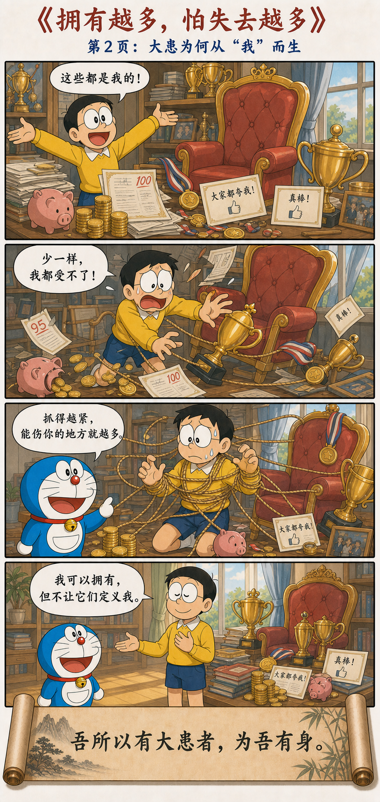
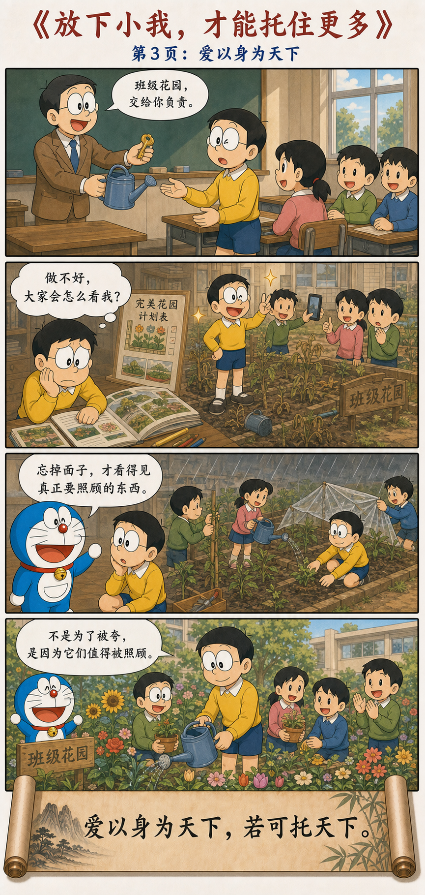

得之若惊，失之亦若惊
Alarmed When It Is Gained, Alarmed When It Is Lost
宠辱若惊，贵大患若身。
何谓宠辱若惊？
宠为下，得之若惊，失之若惊，
是谓宠辱若惊。
何谓贵大患若身？
吾所以有大患者，为吾有身；
及吾无身，吾有何患？
故贵以身为天下，若可寄天下；
爱以身为天下，若可托天下。
Favor and disgrace both bring alarm; value great trouble as you value the self. What does it mean that favor and disgrace both bring alarm? Favor places one below: gaining it brings alarm, and losing it brings alarm. This is what it means for favor and disgrace both to alarm us. What does it mean to value great trouble as the self? I have great trouble because I have a self to defend; if I were free of that narrow self, what trouble would remain? Therefore, one who values the self for the sake of all under heaven may be entrusted with all under heaven; one who loves the self for the sake of all under heaven may be charged with its care.
宠必有辱，荣必有患
Favor Carries Disgrace; Glory Carries Trouble
王弼把开头解释为：“宠必有辱，荣必有患。”宠爱并不是辱的安全反面，它本身已经带着失宠的可能；荣耀也不是忧患的终点，它会立刻制造需要防守的位置。
Wang Bi explains the opening this way: favor necessarily carries disgrace within it, and glory necessarily carries trouble. Favor is not the safe opposite of humiliation; it already contains the possibility of falling from favor. Glory is not the end of anxiety; it immediately creates a position that must be defended.
因此，老子没有只说“受辱若惊”，而是把“宠”也放进惊惶之中。受辱让人痛苦，受宠则让人害怕失去；看似相反的两端，最后都可能成为牵动你的绳子。
Laozi therefore does not speak only of being alarmed by humiliation; he places favor inside the same anxiety. Humiliation causes pain, while favor creates fear of losing it. The two apparent opposites can become the same rope pulling the mind.
如果夸奖决定你今天是谁，沉默也会开始像一种惩罚。
If praise determines who you are today, silence will begin to feel like punishment.
不要把人生交给评价的开关
Do Not Hand Your Life to the Switch of Other People’s Judgment
受到宠爱和受到羞辱，都可能让人惶恐。受宠之所以危险，是因为它把人放在依赖外部评价的位置：得到时担心配不上，失去时担心自己已经变差。
Favor and humiliation can both produce fear. Favor is dangerous because it places a person in dependence on external judgment: when it is gained, one fears being unworthy; when it is lost, one fears having become inferior.
人之所以有许多巨大的忧患，是因为有一个被死死抓住的“我”：我的名声、地位、利益、面子、成功，以及别人眼中的我。当这个“我”不再占据全部视野，很多原本无法承受的得失便恢复成普通事件。
Much of our great anxiety comes from a tightly defended “me”: my reputation, position, interest, face, success, and image in other people’s eyes. When this self no longer fills the entire field of vision, many unbearable gains and losses return to being ordinary events.
能放下狭隘自我，并不等于什么都不管。恰恰因为不再忙着保全自己的形象，人才能把注意力移向更大的责任，并真正照顾他人和共同体。
Letting go of the narrow self does not mean caring about nothing. Precisely because one is no longer preoccupied with protecting an image, attention becomes available for greater responsibility and genuine care for other people and the community.
从评价的遥控器，到托住更大的责任
From the Remote Control of Judgment to the Capacity for Greater Responsibility



受宠为什么不是一件单纯的好事
Why Favor Is Not Simply a Good Thing
老板今天特别欣赏你，你很高兴；明天没有夸你，你便开始猜：是不是对我有意见？是不是别人超过我了？宠爱一旦变成价值证明，失去宠爱就会被体验成自我崩塌。
Your manager praises you today and you feel elated; tomorrow there is no praise, and the questions begin: Is something wrong? Has someone surpassed me? Once favor becomes proof of worth, losing favor feels like the collapse of the self.
所以“宠为下”并不是说被喜欢本身可耻，而是说：依靠别人的喜欢才能站稳，就已经把自己放到了被支配的位置。对方不必命令你，只要改变表情、语气和注意力，你便跟着上下波动。
“Favor places one below” does not mean that being liked is shameful. It means that if another person’s liking is required for you to stand upright, you have already entered a subordinate position. No command is necessary; a change in expression, tone, or attention is enough to move you up and down.
反馈属于别人，宠辱仍应属于自己
Feedback Belongs to Others; Your Dignity Remains Your Own
不要把决定自己宠辱的权力交给别人，并不等于拒绝批评，更不是无论做什么都说“我最棒”。别人的评价可以提供信息：哪里做得好，哪里需要改，合作是否顺利，结果有没有达到标准。
Refusing to hand others the power over your dignity does not mean rejecting criticism or declaring yourself perfect. Other people’s evaluations can provide information: what worked, what needs improvement, whether collaboration went well, and whether a result met its standard.
问题出在评价从“关于一次行为的信息”，升级成了“关于整个人的判决”。论文被拒，可以说明论证、写作或匹配度有问题；它不能独自证明你不适合研究。一次失误需要修正，但不必扩张成“我这个人不行”。
The problem begins when evaluation moves from information about an action to a verdict on the whole person. A rejected paper may reveal problems in argument, writing, or fit; by itself it cannot prove that you are unfit for research. A mistake may require correction without expanding into “I am a failure.”
把“发生了什么”与“我是谁”分开
Separate What Happened from Who You Are
领导夸我，可以翻译成“这次工作得到了认可”，不必翻译成“我终于是个有价值的人”。领导批评我，可以翻译成“这里需要检查”，不必直接翻译成“我很差”。
Praise from a leader can mean “this piece of work was recognized,” without meaning “I finally have value.” Criticism can mean “this area needs examination,” without immediately becoming “I am inferior.”
同样，论文中了，不等于整个人被加冕；论文拒了，也不等于整个人被否定。股票上涨不能单独证明判断正确，下跌也不能单独证明判断错误。先辨认事实，再更新模型，最后才决定行动。
Likewise, an accepted paper does not crown the whole person, and a rejection does not erase the whole person. A rising stock alone does not prove a judgment correct, nor does a falling stock alone prove it wrong. Identify the facts, update the model, and only then decide how to act.
评价可以改变我的做法，但不必接管我的价值。
Evaluation may change what I do without taking possession of what I am worth.
“身”不只是一具身体，也是那个必须被保护的我
The “Self” Is More Than the Body: It Is the “Me” That Must Be Defended
“吾所以有大患者，为吾有身”很容易被误读成身体是祸患，甚至误读成不要生命。可是这一章最后仍然说“贵以身”“爱以身”，可见老子并不是贬低生命本身。
“I have great trouble because I have a self” can easily be misread as declaring the body a disaster or rejecting life. Yet the chapter ends by speaking of valuing and loving the self, so Laozi is not simply disparaging embodied life.
这里的“身”，可以进一步理解为被执著包裹的自我：我的位置不能下降，我的判断不能出错，我的面子不能受损，我必须永远赢过别人。这个自我越膨胀，需要防守的边界便越长。
Here, the self can also be understood as the ego wrapped in attachment: my position must never fall, my judgment must never be wrong, my face must never be damaged, and I must always defeat others. The larger this ego grows, the longer the border that must be defended.
你拥有的东西越多，能够拉动你的绳子也越多
The More You Possess, the More Ropes Can Pull You
职位越高，越怕失去职位；钱越多，越怕财富缩水；名气越大，越怕公众批评；越觉得自己“必须成功”，越不能承受普通的失败。这些东西本身未必有错，问题是它们是否已经与“我是谁”绑在一起。
The higher the position, the greater the fear of losing it; the greater the wealth, the greater the fear of decline; the larger the reputation, the greater the fear of criticism; the stronger the demand to succeed, the less tolerable an ordinary failure becomes. None of these things is necessarily wrong. The question is whether they have fused with identity.
于是出现一个悖论：拥有的东西越来越多，自由却可能越来越少。每一项财产、名声和身份都伸出一根绳子；只要外界轻轻一拉，内心便不得不跟着移动。
A paradox appears: possessions increase while freedom may shrink. Every asset, reputation, and identity extends a rope; the slightest external pull then moves the inner life with it.
松开绳子不是把东西全部扔掉，而是恢复主次：我可以拥有职位，但职位不拥有我；我可以珍惜成果，但成果不是我的全部；我可以希望成功，但失败不等于人格破产。
Loosening the ropes does not require throwing everything away. It restores the order of things: I may hold a position without being possessed by it; I may value achievement without becoming identical to it; I may hope for success without treating failure as personal bankruptcy.
不是“我摆烂了”，而是“我不再围着我转”
Not “I No Longer Care,” but “I No Longer Revolve Around Myself”
如果“无身”被理解成什么都不在乎，最后两句便无法解释。老子先让人松开狭隘自我，随后马上把天下交到面前：你是否能够珍惜更大的生命，承担更大的托付？
If freedom from the narrow self meant caring about nothing, the last two lines would make no sense. Laozi first loosens the ego and then immediately places the world before us: can you value a larger life and bear a larger trust?
只顾面子的人，做事首先考虑别人怎么看；真正放下面子的人，才有余力看见事情需要什么。花园缺水就浇水，同伴需要支持就支持，制度有问题就修正，不必先问这一切能不能让自己显得厉害。
A person ruled by face first asks how everything will look. A person who releases face has the capacity to see what the situation needs. Water the garden when it is dry, support a companion who needs help, repair a failing institution—without first asking whether any of it will make you appear impressive.
越不死守自己，越能托住天下
The Less You Cling to the Self, the More You Can Hold the World
“贵以身为天下，若可寄天下；爱以身为天下，若可托天下”的句法与解释历来并不完全一致。这里采用一种现代读法：能够像珍惜自身一样珍惜天下、并且不因宠辱荣患损害这一份担当的人，才可以被托付更大的责任。
The syntax and interpretation of the final lines have never been completely uniform. This chapter adopts one modern reading: a person who can value the world as carefully as the self, and whose responsibility is not damaged by favor, disgrace, glory, or trouble, may be entrusted with something larger.
这也是全章最漂亮的结构。老子不是把人从世界里赶走，而是先拿掉一个不断索取认可的小我，再让更辽阔的责任进入。越不需要用天下证明自己，越可能真正为天下做事。
This is the chapter’s most beautiful movement. Laozi does not remove the person from the world. He first removes the narrow self that constantly demands validation, making room for a wider responsibility. The less one needs the world to prove the self, the more one may truly act for the world.
不要把决定自己宠辱的权力交给别人
Do Not Hand Others the Power to Decide Your Dignity
别人的评价可以听，制度的标准可以参考，现实的结果必须面对。但它们都不必成为控制内心的遥控器。真正的自由不是永远受到赞美，而是赞美与冷落都不能替你决定自己是谁。
Listen to other people, consult institutional standards, and face real outcomes. None of them must become the remote control of the inner life. Freedom is not receiving praise forever; it is refusing to let praise or neglect decide who you are.
不因受宠而膨胀，不因受辱而坍塌；
不靠天下证明自己，才可能真正托住天下。
Do not swell under favor or collapse under disgrace. Only one who does not use the world to prove the self may truly help hold the world.
原典与注释
Primary Texts and Commentaries